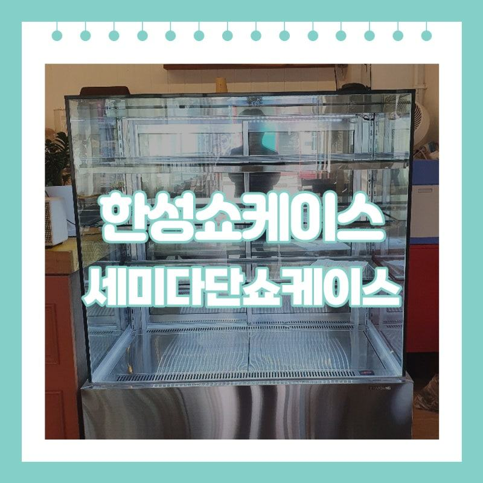
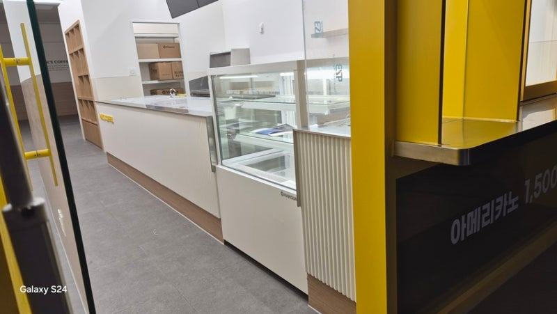
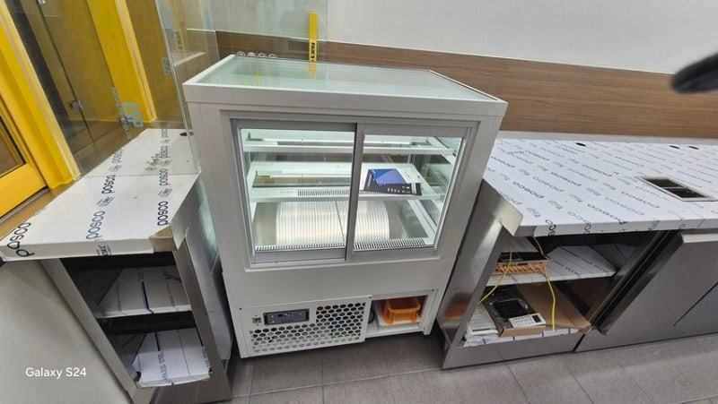
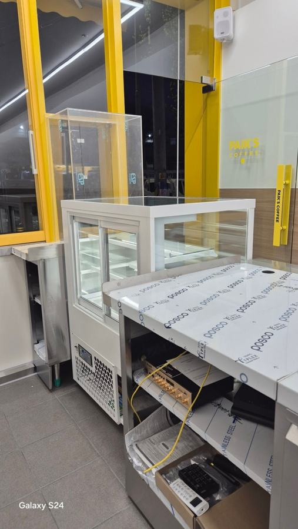
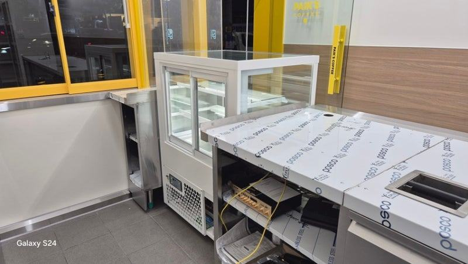
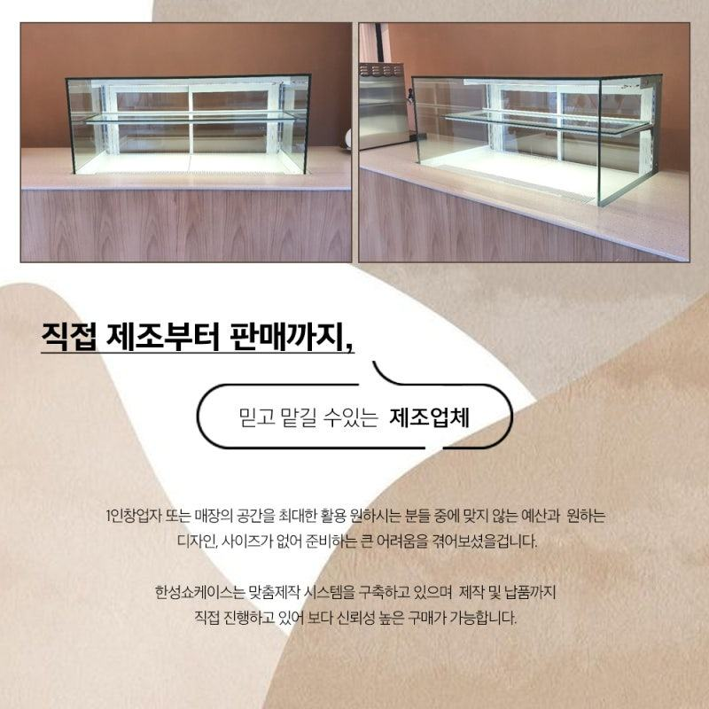
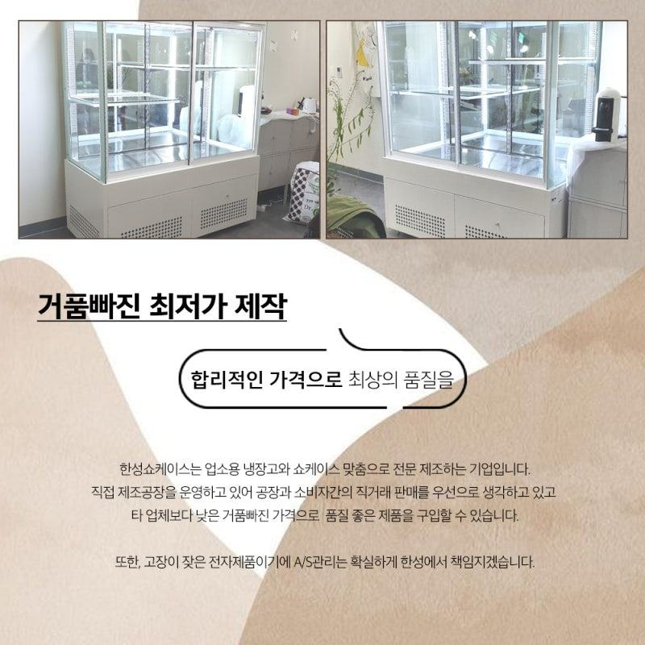

한성제품
편의점 창업 준비물, 냉장·냉동 집기 체크리스트

편의점 창업 준비물 가운데 냉장·냉동 집기는 음료용 도어형 냉장고, 간편식과 유제품용 세미다단 쇼케이스, 아이스크림 냉동고, 계절용 온장고 네 가지로 나눠 준비하세요. 집기마다 크기, 문 방식, 전원 위치, A/S 연락처를 미리 정해 두면 오픈 직전에 허둥대는 일이 줄어듭니다.
안녕하세요. 개인 편의점과 동네 마트에 들어가는 냉장 집기를 맞춤으로 만드는 한성쇼케이스입니다.
편의점 창업 준비물 목록을 적다 보면 포스기, 진열 선반, CCTV, 간판까지 챙길 게 끝이 없습니다.
그 사이에서 냉장 집기는 "대충 몇 대 들이면 되겠지" 하고 넘어가기 쉬운데, 막상 상품을 채우려고 보면 칸이 모자라거나 전원 위치가 맞지 않는 경우가 생깁니다.
특히 프랜차이즈 본사 집기를 그대로 받는 게 아니라 혼자 창업하시는 경우라면 냉장고 종류와 대수, 크기를 직접 정하셔야 합니다.
그만큼 내 매장에 맞게 구성할 수 있는 자유도 있고요.
오늘은 편의점 냉장·냉동 집기를 종류별로 나눠, 준비할 때 무엇을 확인하면 좋은지 체크리스트 형식으로 정리해 드리겠습니다.
1. 음료용 도어형 냉장고
편의점 매출에서 음료와 주류가 차지하는 자리는 크고, 대부분 유리문이 달린 도어형 냉장고에 진열합니다.
벽 한 면을 통째로 쓰는 경우가 많아 벽 길이에 몇 짝의 문을 넣을지가 가장 먼저 정할 일입니다.
문 손잡이 방향과 여닫는 방식도 함께 보세요. 통로가 좁은 매장이라면 문을 활짝 열었을 때 손님 두 명이 엇갈릴 수 있는지 확인해야 합니다.
뒤에서 채우는 구조로 할지 앞에서 채울지도 창고 위치에 따라 정해집니다.
- 음료 벽면 길이와 문 짝 수를 정하세요.
- 문을 열었을 때 통로 폭이 남는지 확인하세요.
- 상품을 앞에서 채울지 뒤에서 채울지 정하세요.
2. 간편식·유제품용 세미다단 쇼케이스
삼각김밥, 도시락, 샌드위치, 우유와 요구르트는 손님이 바로 집어 갈 수 있는 세미다단 오픈 쇼케이스에 많이 둡니다.
기성 세미다단은 모양과 규격이 정해져 있어, 기둥이나 창문이 있는 매장에서는 자리가 애매하게 남곤 합니다.
단 수와 선반 깊이는 주력 상품 크기에 맞춰 정하세요. 도시락처럼 넓은 상품과 음료처럼 높은 상품을 한 대에 섞는다면 선반 높이를 조절할 수 있게 만드는 게 편합니다.
밤에는 나이트커버를 쓸 수 있는지도 확인해 두세요.


3. 아이스크림 냉동고와 온장고
아이스크림 냉동고는 계산대 근처나 출입구 쪽에 두는 경우가 많아, 다른 집기와 동선이 겹치지 않는지 먼저 봐야 합니다.
냉동 집기는 열을 많이 내니 뒷면 통풍 공간도 넉넉히 잡아 주세요.
겨울철 캔커피, 두유, 즉석 음료를 팔 계획이라면 온장고 자리도 처음부터 정해 두시는 게 좋습니다. 계절 집기라고 나중에 끼워 넣으려 하면 전원과 자리가 마땅치 않습니다.
4. 전원, 반입, A/S까지
냉장·냉동 집기가 여러 대 들어가는 편의점은 전기 용량과 콘센트 위치가 중요합니다. 집기 배치도를 들고 전기 공사 전에 전용 회로를 몇 개 둘지 정해 두세요.
출입문 폭과 반입 경로도 집기 크기를 정하는 기준이 됩니다.
고장이 났을 때 얼마나 빨리 고칠 수 있는지도 준비물입니다. 무더운 날 냉장고가 멈춰 수리가 며칠씩 걸리면 그만큼 상품 손실로 이어지니, 집기를 고를 때 A/S 접수 경로와 대응 방식을 함께 확인해 두세요.
- 집기 배치도에 전용 콘센트 위치를 표시하세요.
- 출입문 폭과 반입 경로를 재 두세요.
- 집기별 A/S 연락처를 한곳에 정리하세요.
체크리스트
- 음료 도어형 냉장고 문 짝 수
- 세미다단 쇼케이스 단 수와 선반 높이
- 아이스크림 냉동고 위치와 통풍
- 온장고 자리와 전원
- 전용 회로·콘센트 위치
- 반입 경로와 A/S 연락처
프랜차이즈 대신 혼자 여는 편의점의 집기 맞춤 제작
편의점이라고 하면 대형 프랜차이즈를 먼저 떠올리시지만, 혼자 창업하시는 분도 많습니다. 프랜차이즈는 본사 정책에 따라 취급 상품과 집기가 정해져 있어 제안받은 쇼케이스를 그대로 써야 하는 반면, 개인 편의점은 매장 상황에 맞춰 집기를 직접 고를 수 있습니다.
널찍한 매장도 있지만 작고 아담한 매장도 많아, 한성쇼케이스는 높이와 폭, 색상, 도어 오픈 방식까지 요청에 맞춰 편의점쇼케이스를 제작합니다.
직접 제작하고 판매하기 때문에 중간 유통 마진이 붙지 않고, 설치 뒤 고장이나 유지 보수가 필요할 때 바로 대응하는 것을 가장 중요하게 생각하고 있습니다.





자주 묻는 질문
편의점 냉장 집기는 몇 대 정도 준비해야 하나요?
매장 크기와 상품 구성에 따라 크게 다릅니다. 음료·간편식·냉동 상품의 비중과 벽면 길이를 알려 주시면 필요한 대수와 배치를 함께 잡아 드립니다.
세미다단 쇼케이스도 매장에 맞춰 만들 수 있나요?
네, 매장 공간에 맞는 모양과 사이즈로 주문 제작합니다. 기둥이나 창문 때문에 기성품이 애매하게 들어가는 자리라면 특히 효과가 큽니다.
오픈 날짜가 정해져 있는데 언제 주문해야 하나요?
맞춤 제작은 설계와 제작 기간이 필요하니 인테리어 공사 일정과 함께 잡으시는 게 좋습니다. 전기 공사 전에 집기 배치를 확정해 두면 일정이 꼬이지 않습니다.
매장 조건에 맞춰 만드는 한성쇼케이스
원하시는 제품 사진과 설치할 공간 사진만 보내 주셔도 매장에 맞는 구성을 추천해 드립니다.
- 전국 240여 개 A/S 전담 센터 운영
- 본사 대량 자재 매입으로 품질 대비 합리적인 가격
- 유럽제·삼성 냉각 콤프레셔 적용
- 국내 최초 쇼케이스 전문 디자이너 상주
매장 폭과 원하는 진열 구성을 알려 주세요. 실측과 견적을 안내해 드립니다.
031-986-2458